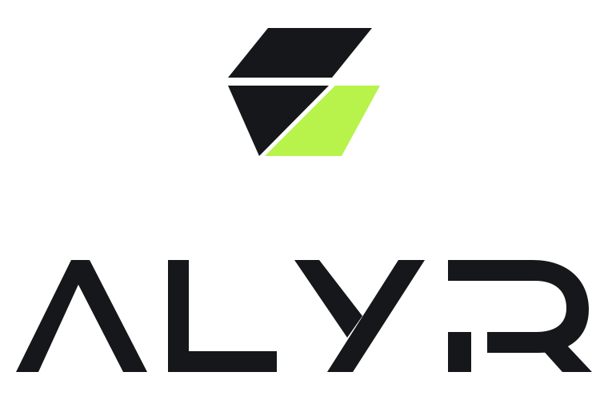
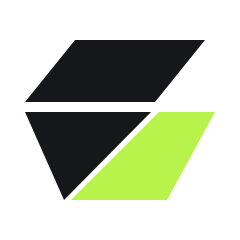
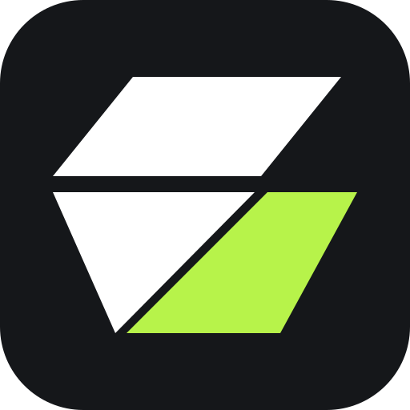
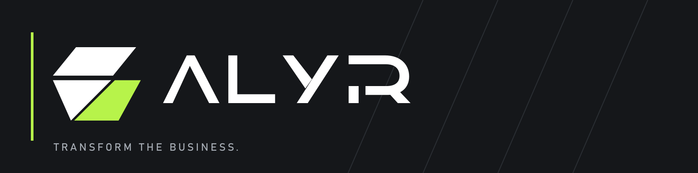
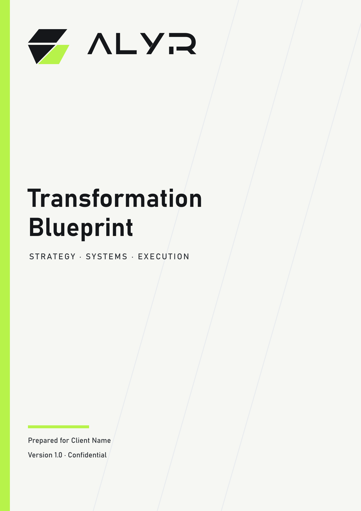
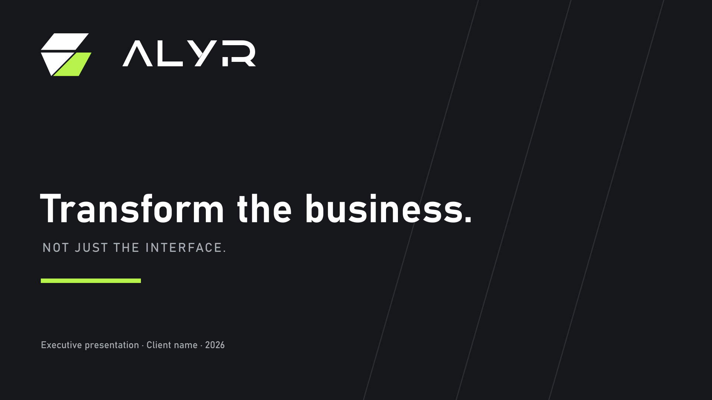

01 Identity operating system
Precision for the
business in motion.
A complete brand and product language for ALYR—built from Carbon, Monochrome and one disciplined Volt signal.


2core palettes
5logo forms
AAaccessibility target
Brand direction
Transform the business.
Not just the interface.
- 01Clarity is premium.
- 02Signal, do not decorate.
- 03Operations before optics.
- 04Human judgment stays visible.
02 Identity
One mark. Every operating context.
The Command Fold and cut‑Y wordmark are locked vector artwork. Choose the correct composition; never redraw it.
Primary / light surface
SVG master ↗
Primary / Carbon surface
SVG master ↗
The cut‑Y is the recognition device.
Never typeset the wordmark, close the Y, move the cut, or apply the sliced form to ordinary typography.
Read logo rules03 Color
Monochrome carries the system.
Volt carries the decision.
70%
neutral space
20%
Carbon structure
08%
Mist support
02%
Volt signal
PASS
Carbon on Volt
Approved for primary controls and short emphasis.
FAIL
Volt text on White
Never use for body or interface text.
04 Typography
Instrument Sans
with operational range.
The wordmark stays custom. Product and editorial typography stays clear, flexible and multilingual.
Aa
Instrument Sans Variable
Primary UI + editorial family
ABCDEFGHIJKLMNOPQRSTUVWXYZ
abcdefghijklmnopqrstuvwxyz
0123456789 / QAR % ↗
Display / 72
Make work visible.
H1 / 44
A better operating model.
H2 / 34
Decisions become momentum.
Body / 16
ALYR connects strategy, workflow, software, AI, data and adoption into one accountable transformation system.
Metadata / 12
05 Iconography
Square construction.
Unambiguous actions.
Strategy
Workflow
Automation
AI
Data
Security
Document
People
Growth
Calendar
Notification
Settings
06 Components
Built for decisions,
not decoration.
One primary action per decision area. Labels name the outcome.
| Workstream | Owner | Status | Next decision | Due |
|---|---|---|---|---|
| Customer intake | Product | In progress | Approve bilingual flow | 17 Jul |
| CRM migration | Operations | Waiting for you | Confirm field mapping | 18 Jul |
| Executive dashboard | Data | Complete | — | 14 Jul |
Review ready.The workflow map has 3 decisions requiring your input.
Approved.The decision was recorded in the project audit log.
Upload failed.Your case is saved. Try the PDF again or contact secure support.
07 UX patterns
The system always reveals
the next meaningful action.
Client portal / action queue
Good morning, Aisha.
AS
2 actions need you
01
Approve the future workflow
Customer intake · 6-minute review
02
Confirm CRM field mapping
Sales system · Due tomorrow
Suggested workflow risk
Identity documents are copied into three disconnected locations.
Based on 14 mapped steps and the evidence files selected for this audit.
View source boundary and limitations
The suggestion uses only files explicitly attached to this audit. It has not verified legal retention requirements.
08 Applications
One system, delivered
at the right resolution.




09 Governance
Consistency is an operating practice.
Source artwork, rules, tokens and exports move together. Every release is traceable.